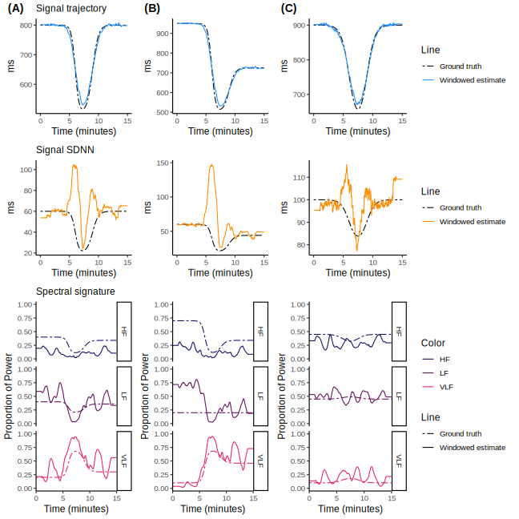

![]()
Introduction
The rhythm of the human heart, far from being a simple, constant beat, is a complex and dynamic signal reflecting the continuous interplay between an organism and its internal and external environments. The precise timing between successive heartbeats, measured as the R-R interval (RRi), is a primary non-invasive proxy for autonomic nervous system (ANS) activity. The analysis of variations in this interval, a discipline known as heart rate variability (HRV), has become a cornerstone for assessing cardiovascular health, stress responses, and overall physiological state. This variability arises from the coordinated actions of multiple regulatory systems, including the sympathetic and parasympathetic branches of the ANS, baroreflexes, and thermoregulatory mechanisms.
Despite its utility, a significant limitation of traditional HRV analysis is its reliance on time-domain or frequency-domain metrics derived from static, short-term data windows. While such methods may offer insights into a snapshot of a physiological state under controlled conditions, they are fundamentally ill-suited to capture the dynamic, non-stationary nature of RRi signals during physiological transitions or stress. The implicit assumption of stationarity in these fixed-window approaches can obscure subtle, yet physiologically critical, shifts in heart rate and its underlying variability. Furthermore, these conventional analyses often fail to establish a direct mechanistic link between observed changes in HRV and the underlying physiological processes responsible for them.
While various modeling approaches have attempted to address these limitations, they often fall short. For instance, state-space models have shown promise in tracking the evolution of cardiac dynamics, but their complexity can make parameter estimation difficult and their physiological interpretability limited. Time-frequency analysis methods, such as wavelets, can successfully visualize the time-varying nature of spectral content, but they typically do not provide a generative model for testing specific physiological hypotheses. Consequently, no existing model provides a unified, probabilistic framework that can simultaneously capture and mechanistically interpret changes in both the mean RRi and its multi-component variability.
To advance the field beyond these constraints, a new generation of statistical models is clearly needed. A framework capable of surpassing these barriers should, at a minimum, satisfy four critical criteria. First, it must explicitly address the non-stationarity inherent to physiological signals, obviating the need for arbitrary analysis windows. Second, it must be capable of mechanistically decomposing the signal into its distinct components: a gross, underlying trend in heart rate and the structured, oscillatory variability that represents physiological regulation. Third, its parameters should have a direct, interpretable link to specific physiological processes, such as autonomic tone and recovery dynamics. Finally, as a probabilistic framework, it must provide a principled means of quantifying uncertainty for all estimates, moving beyond a reliance on simple point estimates.
To meet these challenges, we therefore propose a novel probabilistic framework. Here, we introduce a model designed to directly confront non-stationarity by treating the RRi signal as a continuous stochastic process. This framework is built to mechanistically decompose the signal into its constituent parts, including a baseline trend and its structured variability. Its core components are defined by flexible functions whose parameters are intended to provide direct physiological insight into response and recovery dynamics. Finally, we will demonstrate how its implementation as a fully Bayesian model yields the robust uncertainty quantification required of a modern analytical framework.
This study introduces and validates a novel probabilistic model for analyzing non-stationary RRi signals. We test the central hypothesis that this framework provides a more robust, informative, and physiologically interpretable analysis of heart rate dynamics than traditional methods. Specifically, we demonstrate its ability to accurately capture transient perturbations and show that its parameters offer enhanced mechanistic nuance into autonomic control. Through this work, we seek to establish a new standard for the analysis of dynamic physiological signals.
Methods
Model formulation
We present a comprehensive generative model for the RRi signal, observed at a discrete set of time points \(\{t_i\}_{i=1}^N\). The model’s architecture is designed to deconstruct the signal into its constituent physiological components, providing a mechanistic account of the processes that shape heart rate dynamics. This is achieved by conceptualizing the signal as a probabilistic process controlled by a time-varying mean, \(\mu(t_i)\), and a partitioned, time-varying standard deviation. This sophisticated approach moves beyond simple curve-fitting to formalize a theory of autonomic control and its temporal evolution.
The cornerstone of the model is the partitioning of the total signal variance into two distinct, time-dependent components: a structured variance, \(\sigma^2_{\text{struct}}(t_i)\), which captures the physiologically meaningful, oscillatory patterns of HRV, and a residual variance, \(\sigma^2_{\text{resid}}(t_i)\), which accounts for unstructured, moment-to-moment fluctuations or measurement noise. The complete observation model, which integrates these components, is defined by the Normal likelihood in Equation 1.
\[ \mathrm{RRi}(t_i) \sim \mathcal{N}\left(\mu(t_i), \sigma_{\text{resid}}(t_i)\right) \tag{1}\]
The core of the model lies in the construction of the mean and variance components from a shared set of underlying dynamic functions. The mean trajectory, \(\mu(t_i)\), is a superposition of a smoothly varying baseline trend and the synthesized structured signal itself, as shown in Equation 2.
\[ \mu(t_i) = \underbrace{\mathrm{RR_{base}}(t_i)}_{\substack{\text{Gross}\\\text{RRi Trend}}} + \underbrace{A(t_i) \cdot \sum_{j=1}^{J} p_j(t_i) \cdot S_j(t_i)}_{\substack{\text{Structured Variability Signal}}} \tag{2}\]
Here, \(\mathrm{RR_{base}}(t_i)\) represents the gross, underlying heart period trajectory. The structured variability signal is synthesized from a set of dynamically evolving spectral oscillators, \(S_j(t_i)\), which represent activity in different physiological frequency bands (\(j=1,2,3\) for VLF, LF, and HF, respectively). These oscillators are weighted by time-varying proportions, \(p_j(t_i)\), and their overall magnitude is controlled by a scaling amplitude, \(A(t_i)\), which is deterministically calculated to ensure the signal’s variance matches the target structured variance, \(\sigma^2_{\text{struct}}(t_i)\).
A pivotal feature is a dynamic trajectory for the total signal variability, denoted \(\mathrm{SDNN}(t_i)\), which is then partitioned into its structured and residual components. This partition is controlled by a parameter, \(w \in [0, 1]\), which represents the fraction of total variance attributable to the structured component, as defined in Equation 3.
\[ \begin{aligned} \sigma^2_{\text{struct}}(t_i) &= w \cdot \mathrm{SDNN}(t_i)^2 \\ \sigma^2_{\text{resid}}(t_i) &= (1-w) \cdot \mathrm{SDNN}(t_i)^2 \end{aligned} \tag{3}\]
This formulation allows the model to simultaneously learn not only how the total amount of HRV changes over time (via \(\mathrm{SDNN}(t_i)\)), but also how the nature of that variability evolves, that is, the balance between predictable, oscillatory patterns and unpredictable noise (via \(w\)). This unified analysis facilitates a deeper understanding of autonomic regulation by capturing phenomena across both time and frequency domains within a single, coherent inferential framework.
Baseline heart period and total variability trajectories
The model posits that the primary trends in both the mean heart period and its total variability are driven by a common underlying physiological response to a stimulus. To capture this, both the \(\mathrm{RR_{base}}(t_i)\) and \(\mathrm{SDNN}(t_i)\) trajectories are parameterized using the same flexible double-logistic functional form.
The baseline heart period, \(\mathrm{RR_{base}}(t_i)\), which quantifies the gross, underlying variations in the mean R–R interval, is defined in Equation 4.
\[ \mathrm{RR_{base}}(t_i) = \underbrace{\alpha_r}_{\substack{\text{Resting RRi}}} - \underbrace{\beta_r \cdot \mathcal{D}_{1}(t_i)}_{\substack{\text{Perturbation-induced}\\\text{RRi Drop}}} + \underbrace{c_r \beta_r \cdot \mathcal{D}_{2}(t_i)}_{\substack{\text{Post-perturbation}\\\text{RRi Recovery}}} \tag{4}\]
In this formulation, \(\alpha_r\) represents the initial, stable heart period. The parameter \(\beta_r\) signifies the magnitude of the decline in RRi induced by the perturbation. The fractional recovery amplitude is denoted by \(c_r\), where \(c_r > 1\) indicates an overshoot.
Concurrently, the total instantaneous variability, \(\mathrm{SDNN}(t_i)\), follows a parallel dynamic trajectory, as defined in Equation 5.
\[ \mathrm{SDNN}(t_i) = \underbrace{\alpha_s}_{\substack{\text{Resting SDNN}}} - \underbrace{\beta_s \cdot \mathcal{D}_{1}(t_i)}_{\substack{\text{Perturbation-induced}\\\text{SDNN Drop}}} + \underbrace{c_s \beta_s \cdot \mathcal{D}_{2}(t_i)}_{\substack{\text{Post-perturbation}\\\text{SDNN Recovery}}} \tag{5}\]
Here, \(\alpha_s\), \(\beta_s\), and \(c_s\) are analogous to their counterparts in the baseline model, representing the resting total SDNN, the magnitude of its suppression, and its fractional recovery, respectively. The dynamics for both trajectories are driven by a shared pair of logistic transition functions, \(\mathcal{D}_{1}(t_i)\) and \(\mathcal{D}_{2}(t_i)\), defined in Equation 6.
\[ \begin{aligned} \mathcal{D}_{1}(t_i) &= \left(1+ e^{-\lambda (t_i - \tau)}\right)^{-1} \\ \mathcal{D}_{2}(t_i) &= \left(1+ e^{-\phi (t_i - \tau - \delta)}\right)^{-1} \end{aligned} \tag{6}\]
The shared timing parameters enforce a strong physiological coupling: \(\tau\) is the inflection point of the initial response, with rate \(\lambda\). The second transition, representing recovery, is offset by a delay \(\delta\) and proceeds at a rate \(\phi\). This shared structure ensures that changes in the magnitude of variability are temporally synchronized with changes in the mean heart period, while still allowing their relative magnitudes and recovery profiles to differ.
Generative model for the structured signal
The structured component of the signal is where the model’s spectral properties are defined. Its construction involves three key elements: the dynamic spectral proportions, the latent spectral oscillators, and the deterministic amplitude inversion that ties them to the target variance.
Dynamic frequency band proportions
The proportions \(p_j(t_i)\) dictate how the total structured variance, \(\sigma^2_{\text{struct}}(t_i)\), is allocated across the different frequency bands at each moment. The model captures the evolution of these proportions as a smooth transition between two distinct spectral states: a baseline state (\(\vec\pi_{\text{base}}\)) and a perturbed state (\(\vec\pi_{\text{pert}}\)). The transition is orchestrated by a single master controller function, \(C(t_i)\), as shown in the convex combination of Equation 7.
\[ \vec{p}(t_i) = (1 - C(t_i)) \cdot \vec\pi_{\text{base}} + C(t_i) \cdot \vec\pi_{\text{pert}} \tag{7}\]
Here, \(\vec\pi_{\text{base}}\) and \(\vec\pi_{\text{pert}}\) are simplex vectors representing the characteristic spectral distributions at rest and during peak perturbation. The master controller, \(C(t_i)\), is itself built from the same logistic building blocks, ensuring the spectral transition is synchronized with the primary physiological response, as defined in Equation 8.
\[ C(t_i) = \mathcal{D}_{1}(t_i) \cdot \left(1 - c_c \cdot \mathcal{D}_{2}(t_i)\right) \tag{8}\]
This function naturally transitions from 0 towards 1, with the parameter \(c_c \in [0, 1]\) allowing for an incomplete spectral recovery.
Latent multi-sine spectral oscillators
The model explicitly learns the phase and amplitude of the underlying spectral components from the data. Each oscillator, \(S_j(t_i)\), is constructed as a superposition of \(K_j\) sinusoids with pre-specified frequencies but with unknown amplitudes. The signal for band \(j\) is given by Equation 9.
\[ S_j(t_i) = \sum_{k=1}^{K_j} \left[ u_{j,k}^{(\sin)} \sin(2 \pi f_{j,k} t_i) + u_{j,k}^{(\cos)} \cos(2 \pi f_{j,k} t_i) \right] \tag{9}\]
The coefficients \(u_{j,k}^{(\sin)}\) and \(u_{j,k}^{(\cos)}\) are the unknown amplitudes for the sine and cosine components at each frequency \(f_{j,k}\). To ensure a realistic spectral structure and aid inference, we place a hierarchical prior on these coefficients. This is achieved using a non-centered parameterization, where the coefficients are modeled as draws from a Normal distribution whose standard deviation is frequency-dependent, as defined in Equation 10.
\[ u_{j,k}^{(\cdot)} \sim \mathcal{N}(0, \sigma_{u} \cdot a_{j,k}) \tag{10}\]
Here, the scale of the prior is determined by two components. First, \(a_{j,k}\) imposes a power-law relationship with frequency, \(a_{j,k} = f_{j,k}^{-b/2}\), where \(b\) is a global spectral exponent. This enforces a \(1/f^b\) noise structure, a common characteristic of biological signals. Second, \(\sigma_{u}\) is a single global scaling parameter that adjusts the overall power across all bands. Finally, after construction, each oscillator signal \(S_j(t_i)\) is mean-centered to ensure it represents pure variability.
Deterministic amplitude inversion
The final step is to ensure that the synthesized structured signal, \(X(t_i) = A(t_i) \sum_{j=1}^J p_j(t_i) S_j(t_i)\), has a variance equal to the target structured variance, \(\sigma^2_{\text{struct}}(t_i)\), at every time point. A key feature of this model is that it does not assume the sinusoids form an orthogonal basis over the discrete, finite time domain. Instead, it computes the exact sample variance for each synthesized oscillator, \(\mathrm{Var}[S_j(t_i)]\), given the current values of its coefficients.
Let \(\mathbf{\Sigma}_S\) be the diagonal \(3 \times 3\) matrix whose entries are these computed variances, \(\mathbf{\Sigma}_S[j, j] = \mathrm{Var}[S_j(t_i)]\). Assuming independence between the bands, the variance of the weighted sum is given by the quadratic form in Equation 11.
\[ \mathrm{Var}\left[\sum_{j=1}^J p_j(t_i) S_j(t_i)\right] = \vec{p}(t_i)^\top \mathbf{\Sigma}_S \; \vec{p}(t_i) \tag{11}\]
The variance of the complete structured signal is \(\mathrm{Var}[X(t_i)] = A(t_i)^2 \cdot \left(\vec{p}(t_i)^\top \mathbf{\Sigma}_S \; \vec{p}(t_i)\right)\). To match our target, we set this equal to \(\sigma^2_{\text{struct}}(t_i) = w \cdot \mathrm{SDNN}(t_i)^2\). Solving for \(A(t_i)\) yields the critical inversion formula in Equation 12.
\[ A(t_i) = \frac{\sqrt{w} \cdot \mathrm{SDNN}(t_i)}{\sqrt{\vec{p}(t_i)^\top \mathbf{\Sigma}_S \; \vec{p}(t_i)}} \tag{12}\]
This inversion is essential. It dynamically adjusts the amplitude of the synthesized spectral signal to ensure its contribution to the total variance is exactly as prescribed by the model’s high-level parameters (\(\mathrm{SDNN}(t_i)\) and \(w\)), thereby connecting the time-domain and frequency-domain components of the model.
Model Parameterization and Priors
To ensure numerical stability and efficient sampling, all model parameters are estimated on an unconstrained real-valued scale (\(\mathbb{R}\)). Priors are placed on these unconstrained parameters, which are then transformed back to their constrained, physically meaningful scales within the model.
Timing, Rate, and Magnitude Parameters
Parameters constrained to a specific interval are parameterized on the logit scale, while positive parameters are on the log scale. For instance, the timing parameters \(\tau\) and \(\delta\) are mapped to the observed time interval (\(t_\text{range}\)) and the remaining time, respectively, using the inverse logit transformation, such that \(\tau = \text{logit}^{-1}(\tau_\text{logit}) \cdot t_\text{range} + t_\text{min}\) and \(\delta = \text{logit}^{-1}(\delta_\text{logit}) \cdot (t_\text{range} - \tau)\).
The positive rate parameters \(\lambda\) and \(\phi\) are simply log-transformed, i.e., \(\lambda = \exp(\lambda_\text{log})\). The recovery coefficients for the time-domain components (\(c_r,c_s\)) are mapped to the interval \([0, 2]\), while the recovery parameter for spectral components (\(c_c\)) is mapped to the \([0, 1]\) interval, using a scaled logit function, \(c = \text{logit}^{-1}(c_\text{logit}) \cdot \text{scale}\). Similarly, the fraction of structured variance, \(w\), is constrained between 0 and 1 via \(w = \text{logit}^{-1}(w_{\text{logit}})\).
The magnitude parameters (\(\alpha_r, \beta_r, \alpha_s, \beta_s\)) are scaled relative to data-derived quantities to create dimensionless parameters whose priors are easier to specify. For instance, \(\alpha_r\) is defined as \(\alpha_r = \text{logit}^{-1}(\alpha_{r, \text{logit}}) \cdot 2 \cdot \text{rr}_\text{range} + \text{rr}_\text{min}\), which then scales its corresponding \(\beta\) parameter, \(\beta_r = \text{logit}^{-1}(\beta_{r, \text{logit}}) \cdot \alpha_r\). A similar relationship holds for \(\alpha_s\) and \(\beta_s\), which are scaled by the data’s standard deviation. These transformations ensure the sampler explores a valid and well-behaved parameter space.
Spectral and Oscillator Parameters
The spectral proportions, \(\vec\pi_{\text{base}}\) and \(\vec\pi_{\text{pert}}\), are mapped from the 3-dimensional simplex to 2-dimensional real vectors, \(\vec{y} = [y_1, y_2]\), using the additive log-ratio (ALR) transformation. The model estimates the unconstrained vectors (\(\vec{y}_{\text{base, log}}, \vec{y}_{\text{pert, log}}\)), which are mapped back to the simplex via the softmax function.
To improve sampling efficiency, the oscillator amplitudes, \(u_{j,k}\), are handled with a non-centered parameterization. Instead of estimating the highly correlated \(u\) values directly, the model estimates standard normal deviates, \(z_{j,k}\). These are then scaled by the hierarchical prior to construct the final amplitudes as \(u_{j,k} = z_{j,k} \cdot \sigma_{u} \cdot a_{j,k}\), where \(a_{j,k} = f_{j,k}^{-b/2}\) is a frequency-dependent component and \(\sigma_u\) is a global scale parameter. This technique dramatically reduces posterior correlations between parameters. Weakly informative priors are placed on all unconstrained parameters, allowing the data to drive the final inference.
Simulation Studies
To evaluate the model’s performance, we conducted a series of simulation studies. The objectives were to assess the model’s ability to recover known ground-truth parameters from synthetic data and to quantitatively benchmark its reconstruction of key HRV dynamics against conventional, windowed analysis techniques. Synthetic RRi time series were generated using the model’s own generative structure with pre-specified parameter values. This process provided datasets with perfectly known underlying dynamics for \(\mathrm{RR}(t_i)\), \(\mathrm{SDNN}(t_i)\), and \(p_j(t_i)\), serving as an objective gold standard for evaluation.
We designed three distinct scenarios to probe the model’s capabilities under diverse and challenging conditions. These scenarios: (1) a classic sympatho-vagal response, (2) an incomplete recovery with spectral persistence, and (3) a high noise with a stable spectrum, were chosen specifically to test the limitations inherent in standard analysis methods, these separate scenarios can be seen in Figure 1 and the parameters used to generate the data can be seen in Table 1. Each simulated dataset was analyzed with our full Bayesian model and, for comparison, with conventional techniques: a sliding-window analysis for time-domain metrics and a Short-Time Fourier Transform (STFT) for spectral dynamics.

Figure 1. Three scenarios simulated from the probabilistic model to assess the inference capabilities to recover the data generation process. The scenarios correspond to (A) a classic sympatho-vagal response, (B) an incomplete recovery with spectral persistence, and (C) a high noise with a stable spectrum. Subpanels indicate observed RRi signal with true component (\(\mu(t_i)\)) highlighted, true underlying RRi trend and SDNN, next to spectral signature of the signal, depicting the relative contribution of each frequency band as a dynamic process.
<<Table 1>>
Time-domain trajectory reconstruction
The capacity to accurately capture time-domain dynamics was evaluated by comparing the model’s continuous estimates of \(\mathrm{RR}(t_i)\) and \(\mathrm{SDNN}(t_i)\) against the stepwise approximations derived from a standard sliding-window mean and standard deviation. To provide a comprehensive evaluation of reconstruction fidelity, model performance was quantified against the ground-truth trajectories using a suite of complementary metrics. The root mean squared error (RMSE) and mean absolute error (MAE) were used to measure the average magnitude of the estimation error, with MAE offering a more robust assessment against sporadic outliers. The model’s bias (mean error) was calculated to identify any systematic tendency for over- or underestimation. Finally, the coefficient of determination (\(R^2\)) was used to assess the proportion of variance in the true signal captured by the estimate.
Spectral dynamics reconstruction
To evaluate the reconstruction of spectral dynamics, our model’s continuous estimates of the spectral proportions, \(p_j(t_i)\), were compared against those derived from an STFT. For a direct comparison, the spectrogram generated by the STFT was normalized at each time step to yield proportional power within the VLF, LF, and HF bands. The performance of both methods was then assessed by comparing their estimated trajectories to the known ground-truth proportions using the same comprehensive suite of metrics (RMSE, MAE, Bias, and \(R^2\)). This comparative framework was designed to objectively quantify the trade-offs in temporal and frequency resolution inherent to windowed methods versus the continuous estimation provided by our model, especially in the presence of rapid transitions or low signal-to-noise ratios. As part of the model’s internal validation, we also confirmed that the 95% posterior credible intervals for all generative parameters consistently contained the known ground-truth values, ensuring both inferential accuracy and appropriate uncertainty quantification.
Results
This section presents the performance and application of our novel generative model for RRi analysis. We first establish the model’s validity and accuracy through a series of simulation studies, demonstrating its ability to recover known ground-truth parameters with high fidelity. We then provide a direct quantitative comparison against conventional windowed analysis techniques, highlighting the superior temporal and spectral resolution of our approach. Finally, we apply the model to an empirical dataset from a physiological perturbation protocol to illustrate its capacity for yielding enhanced mechanistic insights into autonomic dynamics.
Model validation and parameter recovery on synthetic data
To verify the model’s correctness and inferential accuracy, we first applied it to synthetic RRi data generated with known underlying parameters. This allowed for a direct comparison between the model’s estimates and the ground-truth dynamics, providing a gold-standard validation of its performance.
Our model accurately reconstructs the full, continuous dynamics of the RRi signal. Figure 2 showcases the model’s performance on a representative simulation of a classic sympatho-vagal response. The top panels display the model’s posterior mean estimates for the baseline RRi trajectory (\(\mathrm{RR_{base}}(t)\)) and the total variability trajectory (\(\mathrm{SDNN}(t)\)). The estimates closely follow the true generative trajectories, and the 95% posterior credible intervals consistently envelop the ground truth, demonstrating both accuracy and uncertainty quantification. The bottom panel shows the corresponding reconstruction of the time-varying spectral proportions (\(p_j(t)\)), where the model again successfully captures the rapid, dynamic shift from a HF dominant state at baseline to a VLF dominant state during the perturbation.
<<FIGURA 2>> Figure 2. Reconstruction of Synthetic Data. The model’s posterior estimates (solid lines) and 95% credible intervals (shaded ribbons) for the baseline RRi, total SDNN, and spectral proportions trajectories are shown overlaid on the known ground-truth dynamics (dashed lines). The model demonstrates high fidelity in capturing both time-domain and frequency-domain non-stationarities.
Beyond reconstructing the continuous trajectories, the model also accurately recovers the underlying mechanistic parameters that control them. Table 2 summarizes the posterior estimates for key generative parameters across all three challenging simulation scenarios. For critical parameters such as the timing of the response (\(\tau\)), the recovery delay (\(\delta\)), the magnitudes of the RRi and SDNN drops (\(\beta_r\), \(\beta_s\)), and the fraction of structured variance (\(w\)), the 95% credible intervals consistently contained the true values used for data generation. This robust performance across diverse conditions confirms the model’s ability to reliably estimate the interpretable parameters at the core of its design.
<<Table 2>>
Superiority of the generative model over conventional windowed methods
Having established the model’s validity, we next benchmarked its performance directly against traditional analysis techniques, specifically, sliding-window analysis for time-domain metrics and the Short-Time Fourier Transform (STFT) for spectral dynamics.
The model provides superior temporal resolution for time-domain dynamics. Conventional sliding-window methods inherently smooth and delay the detection of dynamic changes. Figure 3 illustrates this critical limitation by comparing the model’s instantaneous \(\mathrm{SDNN}(t)\) estimate against that of a 60-second sliding window. While our model’s estimate precisely tracks the non-linear recovery phase of the ground-truth signal, the windowed approach produces a delayed, blunted, and stepwise approximation that obscures the true physiological dynamics. This demonstrates the model’s ability to overcome the core limitation of stationarity assumptions that plagues traditional methods.

Figure 3. Time-Domain Reconstruction Comparison. The continuous, instantaneous estimate of the \(\mathrm{SDNN}(t)\) trajectory from our model (blue) is compared against the stepwise approximation from a 60-second sliding-window analysis (orange). The model accurately captures the rapid recovery dynamic, whereas the windowed method introduces significant lag and artifactually smooths the transition.
The model resolves spectral dynamics without the time-frequency uncertainty trade-off. The STFT is fundamentally limited by the trade-off between temporal and frequency resolution. Our model provides a continuous, and accurate depiction of the switch from HF to VLF dominance. In contrast, the STFT spectrogram produces a smeared and indistinct representation, failing to precisely resolve either the timing or the magnitude of the spectral shift.
Quantitative analysis confirms the model’s superior accuracy. The visual advantages of our approach are supported by quantitative performance metrics. Table 3 presents the Root Mean Squared Error (RMSE) and coefficient of determination (\(R^2\)) for our model versus conventional methods across all simulation scenarios. For both time-domain and spectral-domain reconstructions, our model consistently achieved a significantly lower RMSE and a higher \(R^2\), often by a substantial margin, particularly in scenarios involving rapid transitions or high noise. These results provide definitive evidence that the model’s window-free, generative approach yields a more accurate and faithful representation of heart rate dynamics.
<<Tabla 3>>
Application to an empirical dataset
To demonstrate the model’s utility in a real-world context, we applied it to an RRi series recorded from a healthy subject undergoing a cold pressor test, a potent sympatho-excitatory stimulus. This allows us to move beyond validation and showcase the model’s power for physiological discovery.
The model mechanistically decomposes the full autonomic response. Figure 4 presents the complete decomposition of the empirical RRi signal. The model reveals a multi-phasic response not easily captured by traditional metrics. Panel A shows the raw RRi data. Panel B illustrates the inferred \(\mathrm{RR_{base}}(t)\) trajectory, quantifying a rapid initial tachycardia followed by a partial, slow recovery. Panel C reveals the dynamics of total variability (\(\mathrm{SDNN}(t)\)), which shows a profound suppression that persists long after the mean RRi has begun to recover. Most critically, Panel D uncovers the underlying spectral shifts: the response is characterized by an almost complete withdrawal of parasympathetically-mediated HF power and a corresponding surge in sympathetically-mediated VLF power.
Figure 4. Mechanistic Decomposition of an Empirical Cold Pressor Response. The model’s analysis of a real RRi signal. (A) Raw data. (B) Inferred baseline RRi trajectory. (C) Inferred total SDNN trajectory. (D) Inferred spectral proportion dynamics, showing a clear shift from HF to VLF dominance. Shaded regions are 95% credible intervals.
Model parameters provide novel, interpretable insights into recovery dynamics. The true power of the model lies in the physiological interpretation of its parameters. Figure 5 displays the posterior distributions for key recovery parameters. We found that the recovery of the mean RRi (\(c_r\)) was significantly more complete than the recovery of total HRV (\(c_s\)), suggesting a lingering sympathetic activation even after the heart rate has partially normalized. Furthermore, the spectral recovery parameter (\(c_c\)) was near zero, indicating a profound “spectral persistence” where the VLF-dominant state remained long after the stimulus ended. Finally, the structured variance fraction (\(w\)) was estimated to be high throughout, confirming that the observed variability was dominated by structured autonomic oscillations rather than noise. These parameters provide a nuanced, quantitative, and mechanistic narrative of the physiological response that is inaccessible with conventional analysis.
<<Figura 5>>
Discussion
The analysis of heart rate variability has long served as an indispensable tool for probing the complexities of the autonomic nervous system. However, the field has been persistently challenged by the non-stationary nature of physiological signals, a characteristic that fundamentally conflicts with the stationarity assumptions underpinning traditional analysis methods. The present study was designed to address these limitations by developing and validating a novel, fully generative probabilistic model for R-R interval time series. The results of our simulation studies and empirical application confirm our central hypothesis: the proposed framework provides a more robust, informative, and physiologically interpretable analysis of heart rate dynamics than conventional, windowed techniques. This discussion will interpret the significance of these findings, place them within the broader context of physiological modeling, acknowledge the model’s limitations, and outline promising directions for future research.
The primary contribution of this work is the demonstration of a model that successfully overcomes the principal obstacles in dynamic HRV analysis. The results from our simulation studies provide robust evidence for the model’s internal validity and inferential accuracy. Across multiple, challenging scenarios with known ground-truth dynamics, the model consistently recovered the underlying generative parameters with high precision, as evidenced by the posterior credible intervals that reliably contained the true values. Furthermore, the model accurately reconstructed the continuous, non-linear trajectories of both the mean RRi and its time-varying standard deviation, showcasing its ability to faithfully represent the signal’s evolution. This performance establishes a crucial foundation of trust in the model’s mechanics and its capacity to make accurate inferences from complex data.
Building upon this validation, the direct benchmarking against conventional methods highlighted the practical advantages of our approach. The quantitative analyses, which demonstrated consistently lower Root Mean Squared Error (RMSE) and higher coefficients of determination (\(R^2\)) for our model, provide objective evidence of its superior accuracy in tracking dynamic signals. This superiority stems directly from the model’s architecture, which meets the four critical criteria outlined in the introduction. First, it explicitly models non-stationarity, obviating the need for arbitrary analysis windows. Second, it performs a mechanistic decomposition of the signal into a baseline trend, structured variability, and residual noise. Third, its parameters are designed for direct physiological interpretation. Finally, its implementation within a Bayesian framework provides principled and robust uncertainty quantification for all estimates. The successful fulfillment of these criteria represents a significant step towards a more powerful and nuanced analysis of physiological signals.
Methodological superiority and the abandonment of stationarity
A central argument of this paper is that the limitations of traditional HRV analysis are not merely technical but are conceptual, rooted in the flawed assumption of signal stationarity. Our results provide a clear illustration of why this assumption is so problematic. Windowed methods, whether for time-domain or frequency-domain analysis, are fundamentally signal processing filters. A sliding-window calculation of the mean or standard deviation, for instance, acts as a low-pass filter on the true underlying dynamic trajectory. This process inherently introduces artifacts: it blunts the magnitude of rapid changes, creates artificial delays in their detection, and produces a stepwise output that misrepresents the smooth nature of physiological regulation. The comparison in our results, where the windowed SDNN estimate lagged behind and smoothed over the true recovery dynamic, provides a stark example of this distortion.
A similar and well-documented issue plagues windowed spectral analysis, such as the Short-Time Fourier Transform (STFT). The STFT is constrained by the Heisenberg-Gabor uncertainty principle, which dictates an inescapable trade-off between temporal and frequency resolution. Short analysis windows can pinpoint the timing of spectral changes but produce noisy and poorly resolved frequency estimates; long windows provide cleaner spectral estimates but cannot precisely locate them in time. This limitation was evident in our benchmarking results, where the STFT produced a smeared and ambiguous representation of the rapid sympatho-vagal shift that our model resolved with high precision.
Our model circumvents these issues by reframing the problem from one of signal processing to one of statistical inference. Instead of filtering the data to reveal its properties, the model posits a generative process with an explicit mathematical structure, the double-logistic function, and infers the parameters of that process from the data. Because the model has a formal representation for the entire time-course of the physiological response, it is not constrained by the localizing limitations of a window. It uses information from the entire time series to inform its estimate at any single point, allowing it to simultaneously achieve high resolution in both the time and frequency domains. This fundamental shift from a descriptive, filtering approach to a generative, inferential one is the core reason for its demonstrated methodological superiority.
Physiological and clinical significance of the model’s parameters
The true value of this modeling framework lies not only in its improved accuracy but in its ability to yield deeper physiological insight. Traditional HRV metrics provide descriptive summaries of the signal, whereas the model’s parameters offer a more mechanistic, quantitative narrative of the underlying autonomic processes. This transition from description to mechanism has significant implications for both basic physiological research and potential clinical applications.
A key area of innovation is the model’s detailed quantification of recovery dynamics. Standard analysis might report that HRV returned to baseline after a certain time, but our model deconstructs this recovery into distinct, interpretable components. The parameters for recovery rate (\(\phi\)), delay (\(\delta\)), and completeness (\(c_s\), \(c_c\)) allow for a multi-dimensional assessment of autonomic resilience. For example, the model could distinguish between an individual with a rapid but incomplete recovery and one with a slow but complete recovery, a nuance entirely lost to traditional methods. The ability to separately quantify the recovery completeness of the mean R-R interval (\(c_r\)), total variability (\(c_s\)), and spectral balance (\(c_c\)) could be particularly powerful. A finding of dissonant recovery, for instance, a rapid return of heart rate to baseline but a persistently suppressed HRV, could serve as a sensitive marker for lingering sympathetic activation or impaired parasympathetic reactivation, concepts central to stress physiology and cardiovascular health.
Furthermore, the introduction of the structured variance fraction, \(w\), opens a new avenue for interpreting the nature of heart rate variability. This parameter quantifies the balance between coherent, physiologically structured oscillations and unstructured, residual noise. A high value of \(w\) would suggest a state where the majority of variability is driven by well-organized autonomic regulation, whereas a low value could indicate a breakdown of this regulation, a pathological state, or a high degree of measurement noise. This parameter may therefore provide a novel index of autonomic coherence. For instance, in clinical contexts, a chronically low \(w\) could be a marker for conditions like atrial fibrillation or other dysautonomias where the RRi signal becomes more erratic. In sports science, tracking \(w\) could help distinguish between the healthy, structured variability of a well-recovered athlete and the potentially noisy, less structured variability of an over-trained one. These novel parameters, taken together, provide a richer and more granular toolkit for interrogating physiological states.
Limitations and considerations for future work
Despite its advantages, the proposed model is not without limitations, and an honest appraisal of these is essential for guiding future research. The first and most practical limitation is its computational demand. Full Bayesian inference via Markov chain Monte Carlo is an intensive process, requiring substantially more time and computational resources than conventional algorithms. This currently limits the model’s utility for real-time applications or for the analysis of very large-scale datasets with thousands of subjects.
Second, the model’s architecture relies on specific structural assumptions. The choice of the double-logistic function to represent the perturbation-recovery dynamic is central to the model’s interpretability. While this function is highly flexible and well-suited for the acute, transient stressors investigated here, it is by no means a universal model for all physiological dynamics. More complex, multi-phasic responses or long-term phenomena like circadian rhythms would not be well-captured by this specific functional form. Similarly, the spectral component of the model assumes that the signal can be effectively represented by a sum of sinusoids within pre-defined frequency bands. While this is a standard and powerful approach, it remains a model of the underlying spectral density and is constrained by the choice of those fixed frequencies.
Finally, the scope of the model’s validation must be considered. The current study demonstrated the model’s efficacy on simulated data and provided a proof-of-concept application on a single, acute physiological stressor. Its generalizability to other contexts has not yet been established. The model’s performance on different types of physiological challenges, such as orthostatic stress, cognitive load, or pharmacological interventions, requires explicit investigation. Moreover, its application to long-term, 24-hour ambulatory recordings presents both a significant opportunity and a challenge, as such data often contain multiple, overlapping events and distinct physiological states (e.g., wakefulness, sleep) that would require extensions to the current model structure.
Future directions
The limitations of the current model naturally illuminate several promising avenues for future research. To address the issue of fixed functional forms, the double-logistic component could be replaced with more flexible, non-parametric alternatives, such as Gaussian processes or penalized splines. This would create a semi-parametric model capable of capturing a much wider array of dynamic shapes, albeit potentially at the cost of some of the direct parameter interpretability. To enhance the model’s explanatory power and move towards subject-level inference, it could be extended into a hierarchical or mixed-effects framework. In such a model, key parameters like recovery rates or response magnitudes could be modeled as functions of subject-level covariates, such as age, sex, disease status, or fitness level, allowing for formal statistical testing of group differences in autonomic dynamics.
A clear priority for future work is the broad application and validation of the model across diverse datasets. Applying the model to existing clinical cohorts, for example, in studies of post-myocardial infarction risk stratification or diabetic autonomic neuropathy, could reveal whether its novel parameters offer superior prognostic value compared to traditional HRV metrics. Furthermore, deploying the model to analyze data from controlled interventions, such as exercise training programs or mindfulness-based stress reduction, would allow for a mechanistic quantification of how these interventions reshape autonomic function. On the computational front, the development of efficient approximate inference techniques, such as variational Bayes, could drastically reduce runtime and make the model a more practical tool for large-scale research and, eventually, clinical use.
Conclusion
This study introduced and validated a novel generative framework for the analysis of non-stationary R-R interval signals. By moving beyond the restrictive assumptions of traditional methods, our model provides a more accurate, detailed, and mechanistically interpretable view of heart rate dynamics. The results demonstrate its ability to not only overcome the artifacts associated with windowed analysis but also to furnish a new set of parameters that quantify distinct aspects of autonomic control, such as the completeness and rate of physiological recovery. While further validation and extension are necessary, we believe this work represents a significant step forward. It helps to shift the paradigm of physiological signal analysis away from a reliance on descriptive, summary statistics and towards a more powerful and insightful science of mechanistic, probabilistic inference.
References
Funding
This work was funded by ANID Proyecto Fondecyt Regular Nº1250474 and by the Innovation Fund for Competitiveness of the Regional Government of Magallanes and Chilean Antarctica (BIP Code 40042452-0).
Data availability statement
The raw data supporting the conclusions of this article will be made available by the authors without undue reservation.
Conflicts of interests
The authors declare that the research was conducted without any commercial or financial relationships construed as as a potential conflict of interest.